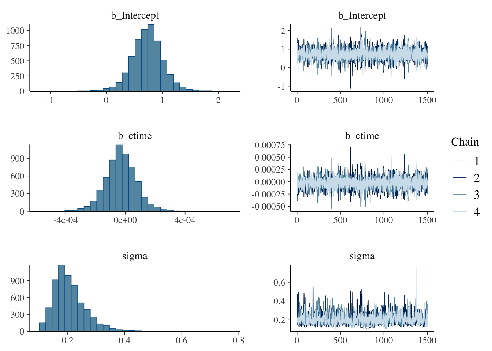

Exploring Regularisation: An R-Based Replication of ‘The Cognitive Roots of Regularisation in Language’.
Introduction
This paper investigates the extent of linguistic regularisation across generations of language transmission using an iterated language learning experiment. We build on Ferdinand et al. (2019)’s paper “the Cognitive Roots of Regularisation’ in which they explore the underlying biases spurning linguistic regularisation by creating four experimental conditions. In these four conditions they vary cognitive load (the amount of stimuli) and domain (linguistic or non-linguistic). In the process of these four experiments they uncover the underlying effects these biases have on linguistic regularisation. However, within the original paper Ferdinand et al. (2019) acknowledge the limitations to their experiments, noting that any conclusions we draw from individual regularisation of linguistic stimuli does not necessarily reflect the results after several chains of cultural transmission. They respond to this by simulating their experiment using an iterated learning model and comparing the results of the high-load, non-linguistic condition and the low-load linguistic condition. They chose these two as they presented the most similar results in the initial experiment. However, in their iteration they diverged sharply. This highlighted the effect underlying biases have on shaping regularisation intergenerationally. The paradigm developed by Ferdinand et al. (2019) serves the basis of our own experiment, where we attempt to replicate their model results in an iterated learning experiment. Finally, we explore whether their results are replicable.
We use the term replicable because (as we will explore in our methodology) our experimental conditions differ slightly to those in Ferdinand et al. (2019). The original paper had the conditions words1, words6, marbles1 or marbles6 – the ‘words’ or ‘marbles’ distinction correlated to domain-specific or domain general conditions. Similarly, ‘1’ or ‘6’ corresponds with low or high-load cognitive processes. Our experiment uses words3, a linguistic-domain, medium-load condition. We will explore what words3 entails in the methodology section of this report. While we attempt to perform the same analysis on our data, we also diverge from the analysis made in the original paper in hopes of exploring its generalizability.
Additionally, we engage with a manner of measuring regularisation appropriated by Ferdinand et al. (2019) called entropy. Entropy has been used historically to quantify the amount of variation in any given dataset. Regularisation then, is the reduction of entropy in a data set. Historically, regularisation has been measured using frequency methods, however Ferdinand et al. (2019) argue that although it is useful in identifying population-level trends, entropy is more effective in quantifying and positively identifying regularisation. Our own study deviates from entropy as the dataset is too small for entropy measures to be applied effectively. This methodological deviation raises questions about the direct comparability of our results, an issue we address in detail in our findings section.
Methodology
Our experiment involved a total of 13 participants, divided into three generations with four to five participants in each generation. All participants were young adults, recruited from the researchers’ peer group, including friends and fellow students. Participants were randomly assigned to one of the three generations. None of the participants had prior knowledge of the study’s purpose or the artificial language used in the experiment.
The novel objects and labels used in this experiment were taken directly from Ferdinand et al (2019) in the interest of replicability. Due to time constraints and lack of resources, Ferdinand et al. (2019)’s original 6-object, 12-word experimental framework was reduced to three pairs of novel words with corresponding images. This limits the extent of the replicability aspect of the experiment, however the hope was to maintain the engagement of the voluntary participants. The experiment was created using the JsPsych framework, a programme for creating behavioural experiments, which presented stimuli and recorded participants’ responses.
The experiment followed an iterated learning paradigm in which each generation’s output served as input for the subsequent generation. Participants were exposed to the artificial language through a series of trials, see figure 1. In each trial, an image was presented along with one of its corresponding labels. Participants were instructed to watch the stimuli with no other instruction. The training phase consisted of 30 trials. These ratios were selected randomly to be varied in order to affirm the robustness of our results and ensure the results were not simply an artefact of a specific ratio pairing. Each participant was exposed to the stimuli in a randomly-generated order.
Immediately following the training phase, participants completed a production task. They were shown each image from the training phase and asked to select a preferred corresponding word from a given pair of labels which had been presented in the trial phase with varying ratios of frequency. Finally they were presented with a perception trial where they were asked to rate how often they viewed each word in proportion to one another in the observation phase.
── Attaching core tidyverse packages ──────────────────────── tidyverse 2.0.0 ──
✔ dplyr 1.1.4 ✔ readr 2.1.5
✔ forcats 1.0.0 ✔ stringr 1.5.1
✔ ggplot2 3.5.1 ✔ tibble 3.2.1
✔ lubridate 1.9.3 ✔ tidyr 1.3.1
✔ purrr 1.0.2
── Conflicts ────────────────────────────────────────── tidyverse_conflicts() ──
✖ dplyr::filter() masks stats::filter()
✖ dplyr::lag() masks stats::lag()
ℹ Use the conflicted package (<http://conflicted.r-lib.org/>) to force all conflicts to become errors
library(ggplot2)library(brms)
Loading required package: Rcpp
Loading 'brms' package (version 2.21.0). Useful instructions
can be found by typing help('brms'). A more detailed introduction
to the package is available through vignette('brms_overview').
Attaching package: 'brms'
The following object is masked from 'package:stats':
ar
library(entropy)
Read data
In the following code, we read in data frames from each participant in each generation.
#adding a column showing the mean output for each stimulus in each generationmeans_df <- combdata |>group_by(generation, stimulus) |>summarize(mean_output =mean(iof_num, na.rm =TRUE)) |>ungroup()
`summarise()` has grouped output by 'generation'. You can override using the
`.groups` argument.
combdata <- combdata |>left_join(means_df, by =c("generation", "stimulus")) |>relocate(mean_output, .before =9)
#top 2% of ctime to remove anomalous resultsy_98th_percentilecomb <-quantile(combdata$ctime, 0.98, na.rm =TRUE)combdata_filtered <- combdata |>filter(ctime <= y_98th_percentilecomb)#filtering for individual stimulus across all final datacombdata_fp <- combdata_filtered |>filter(stimulus =="fp")combdata_tq <- combdata_filtered |>filter(stimulus =="tq")combdata_cb <- combdata_filtered |>filter(stimulus =="cb")
1. ‘combdata’ which includes the following columns:
‘generation’, ‘participant’: generation & participant number of each response - ‘stimulus’: stimulus shown to participant (fep/pax, tas/qar, cal/buv)
‘iof_num’: numeric value of individual output frequency of each participant
‘ctime’: calculated reaction time from time_elapsed
‘x_selected’: binary value -> if target label selected, x_selected = 1
‘input’: input frequency of stimulus
‘output’: output frequency of label choice by participant
‘div’: regularisation, calculated as diff between input and output
2. ‘ratio_comb’ which includes the following columns:
‘generation’, ‘participant’: generation & participant number
‘x_selected’: number of times target label was selected by participant
‘ctime’: average calculated reaction time from time_elapsed
‘ratio’: individual output frequency of each participant
‘extreme’: extremity of iof, calculated by abs(ratio-0.5)
Plotting Data
Plotting label choice split by generation and participant
In this section, we present the findings from our experiment, analysing the data we collected on the effect of varying input ratios label across multiple generations of participants. Our analysis is divided into three distinct generations, each revealing unique patterns in label preferences and the degree of regularization observed.
Generation 1
#plotting generation 1 datagen1|>ggplot(aes(x = stimulus, fill = label_selected)) +geom_bar(position ="fill", alpha =0.7, colour ="black") +scale_fill_manual(values =c("green", "darkred", "yellow", "orange", "green", "darkred")) +labs(x ="Stimulus",y ="Selected Label",fill ="Label",title =str_wrap("Generation 1 Label Selection", width =70),subtitle =str_wrap("This chart shows the labels assigned by participants in generation 1. Green shows the 'desired' outcome (the more frequent input label). Orange/Yellow is used where the input ratio was 5:5.", width =90) )
#plotting generation 1 faceted into individual participantsgen1|>ggplot(aes(x = stimulus, fill = label_selected)) +geom_bar(position ="fill", alpha =0.7, colour ="black") +scale_fill_manual(values =c("green", "darkred", "yellow", "orange", "green", "darkred")) +facet_wrap("participant", ncol =4) +labs(x ="Stimulus",y ="Selected Label",fill ="Label",title =str_wrap("Generation 1 Label Selection", width =70),subtitle =str_wrap("This chart shows the labels assigned by each individual participant in generation 1.", width =90) )
The initial input ratios for Generation 1 were 1:9, 3:7 and 5:5 for tas:qar, cal:buv and fep:pax respectively. These ratios were chosen to maintain consistency with the original experiment while affirming that our findings were a result of processes of regularisation, and not an artifact of a specific ratio. The output ratios of Generation 1 were 3:7, 5:5 and 7:3 for tas:qar, cal:buv and fep:pax respectively. Interestingly, the first two stimuli had moved towards variability as evidenced by the 72.5% selection percentage of ‘qar’ compared to its 90% input percentage in accordance with the 9:1 input ratio. However, the final fep:pax stimulus seemed to regularise. Notably, these changes are relatively minor, suggesting limited evidence for processes of regularisation or variation across conditions.
Generation 2
#plotting generation 2 datagen2|>ggplot(aes(x = stimulus, fill = label_selected)) +geom_bar(position ="fill", alpha =0.7, colour ="black") +scale_fill_manual(values =c("yellow", "orange", "green", "darkred", "green", "darkred")) +labs(x ="Stimulus",y ="Selected Label",fill ="Label",title =str_wrap("Generation 2 Label Selection", width =70),subtitle =str_wrap("This chart shows the labels assigned by participants in generation 2. Green shows the 'desired' outcome (the more frequent input label). Orange/Yellow is used where the input ratio was 5:5.", width =90) )
#plotting generation 2 faceted into individual participantsgen2|>ggplot(aes(x = stimulus, fill = label_selected)) +geom_bar(position ="fill", alpha =0.7, colour ="black") +scale_fill_manual(values =c("yellow", "orange", "green", "darkred", "green", "darkred")) +facet_wrap("participant", ncol =5) +labs(x ="Stimulus",y ="Selected Label",fill ="Label",title =str_wrap("Generation 2 Label Selection", width =70),subtitle =str_wrap("This chart shows the labels assigned by each individual participant in generation 2.", width =90) )
The initial input ratios for Generation 2 were 3:7, 5:5 and 7:3 for tas:qar, cal:buv and fep:pax respectively. The output ratios of Generation 2 were 4:6, 4:6 and 6:4 for tas:qar, cal:buv and fep:pax respectively. In the instance of the cal/buv stimulus, we observed a shift towards regularisation in participant responses, as demonstrated in the re-emergence of a preference for the ‘buv’ label shifting from 50% to 60%, a probability match with the original input ratios. However, regarding the fep/pax and tas/qar stimuli, our results converge towards variability. These changes are again minor, further reinforcing a lack of notable evidence for processes of regularisation or variation across conditions.
Generation 3
#plotting generation 3 datagen3|>ggplot(aes(x = stimulus, fill = label_selected)) +geom_bar(position ="fill", alpha =0.7, colour ="black") +scale_fill_manual(values =c("green", "darkred", "green", "darkred", "green", "darkred")) +labs(x ="Stimulus",y ="Selected Label",fill ="Label",title =str_wrap("Generation 3 Label Selection", width =70),subtitle =str_wrap("This chart shows the labels assigned by participants in generation 3. Green shows the 'desired' outcome (the more frequent input label).", width =90) )
#plotting generation 3 faceted into individual participantsgen3|>ggplot(aes(x = stimulus, fill = label_selected)) +geom_bar(position ="fill", alpha =0.7, colour ="black") +scale_fill_manual(values =c("green", "darkred", "green", "darkred", "green", "darkred")) +facet_wrap("participant", ncol =4) +labs(x ="Stimulus",y ="Selected Label",fill ="Label",title =str_wrap("Generation 3 Label Selection", width =70),subtitle =str_wrap("This chart shows the labels assigned by each individual participant in generation 3.", width =90) )
Using the outcome ratios from generation two, we repeated the experiment with a third generation.The initial input ratios for Generation 3 were 4:6, 4:6 and 6:4 for tas:qar, cal:buv and fep:pax respectively. The output ratios of Generation 3 were 1:9, 2:8 and 7:3 for tas:qar, cal:buv and fep:pax respectively. In this third generation, we observed a significant shift towards regularisation across all stimuli. The regularisation observed seems to be in accordance with the preferred labels in the original input ratios, or in the case of the fep/pax stimulus, with an original 5:5 ratio, in accordance with Generation one - the first instance where a preferred label was presented. To further reinforce our hypothesis that specific ratio pairings do not affect the results, we observed that, interestingly, although the input ratios for all stimuli in this generation was the same, the final outcome ratios shifted towards regularisation at differing rates. We cannot predict the level of regularity of the final outcome due to individual learner biases and a limited participant set. In order to see a more average widespread regularisation, we would have to simulate mass cultural transmission, across more generations. However, generation three’s results demonstrate that throughout the course of the experiment, regarding all 3 stimuli, there is a gradual progression towards regularisation in label selection across generations. This can be directly seen in the chart below which shows an average of label selection across generations.
Combined data
#plotting combined datacombdata|>ggplot(aes(x = stimulus, fill = label_selected)) +geom_bar(position ="fill", alpha =0.7, colour ="black") +scale_fill_manual(values =c("green", "darkgreen", "blue", "darkblue", "red", "darkred")) +labs(x ="Stimulus",y ="Selected Label",fill ="Label",title =str_wrap("Label Selection", width =70),subtitle =str_wrap("This chart shows the labels assigned by participants across the entire experiment.", width =90) )
#plotting combined data faceted into individual generationscombdata|>ggplot(aes(x = stimulus, fill = label_selected)) +geom_bar(position ="fill", alpha =0.7, colour ="black") +scale_fill_manual(values =c("green", "darkgreen", "blue", "darkblue", "red", "darkred")) +facet_wrap("generation", ncol =3) +labs(x ="Stimulus",y ="Selected Label",fill ="Label",title =str_wrap("Label Selection", width =70),subtitle =str_wrap("This bar chart shows the ratio of labels assigned by each individual generation (a combination of the previous charts). The increase in preferences reinforces the gradual progression of regularity.", width =90) )
Divergence of ratios across generations
We can represent this information through several different graphs depicting the divergence of ratios across generations. This visually quantifies how much the output ratios have changed across generations and compares them to the original input ratios from generation 0.
suppressWarnings(print(ggplot(combdata, aes(x= generation, y= output, group=interaction(stimulus), color = stimulus)) +geom_smooth() +geom_point(aes(y = output, group = stimulus), shape =1, size =2, color ="black")+scale_y_continuous(limits =c(0, 1)) +geom_line(aes(y =0.1), color ="lightblue", linetype ="dotted", size =1) +geom_line(aes(y =0.3), color ="lightpink", linetype ="dotted", size =1) +geom_line(aes(y =0.5), color ="lightgreen", linetype ="dotted", size =1) +theme_classic()+labs(x ="Generation",y ="Output frequency",title =str_wrap("Plot of output ratios across each generation", width =90),subtitle =str_wrap("As compared with original ratio (indicated by dotted lines), the output ratios across the experiment display a bias towards regularisation", width=90) ) ))
`geom_smooth()` using method = 'loess' and formula = 'y ~ x'
suppressWarnings(print(ggplot(combdata, aes(x = generation, y = div, color = stimulus, shape = stimulus)) +geom_smooth(se =FALSE) +geom_point() +geom_line(aes(y =0), color ="grey", linetype ="dotted", size =1) +theme_classic() +labs(x ="Generation",y ="Divergence",title =str_wrap("Plot of divergence of output ratios from original input ratio across generations") ) ))
`geom_smooth()` using method = 'loess' and formula = 'y ~ x'
Using “entropy” package to assess entropy (change) in our dataset
The original paper uses entropy to measure regularisation. They deem that entropy measurements are the most effective in identifying regularisation behavior, as they capture the complex interactions between linguistic variants and their contexts. This use of entropy to measure regularisation is not conducive to our much smaller study. As a result of a low participant number and small sample size, the entropy package (Hausser and Strimmer, 2021) returns zero counts, therefore if we were to use entropy to calculate regularisation, it would be inefficient and strongly biased. The authors suggest that a larger participant set is necessary to accurately observe the gradual evolution of linguistic regularity across generations (Hausser and Strimmer, 2021).
In Ferdinand, Kirby and Smith (2019), they discuss the importance of participant choice in the presence of inconsistent linguistic input leading to regularisation of their responses by favoring certain forms over others. We explored whether there was a trend as to when participants changed in favour of another label throughout the experiment.
#gen1gen1_tq|>ggplot(aes(x = choice_num, y = label_selected)) +geom_point() +facet_wrap("participant", nrow =4) +labs(x ="Point in Experiment",y ="Label Choice",title ="Participant Choices Across Generation 1",subtitle =str_wrap("This chart shows the label choices of participants across the course of gen 1. It has been separated into each stimulus; this one shows the tas/qar stimulus.", width =90) )
#gen2gen2_tq|>ggplot(aes(x = choice_num, y = label_selected)) +geom_point() +facet_wrap("participant", nrow =5) +labs(x ="Point in Experiment",y ="Label Choice",title ="Participant Choices Across Generation 2",subtitle =str_wrap("This chart shows the label choices of participants across the course of gen 2. It has been separated into each stimulus; this one shows the tas/qar stimulus.", width =90) )
#gen3gen3_tq|>ggplot(aes(x = choice_num, y = label_selected)) +geom_point() +facet_wrap("participant", nrow =4) +labs(x ="Point in Experiment",y ="Label Choice",title ="Participant Choices Across Generation 3",subtitle =str_wrap("This chart shows the label choices of participants across the course of gen 3. It has been separated into each stimulus; this one shows the tas/qar stimulus.", width =90) )
With an example analysis of the tas/qar stimulus representing the trends across all stimuli, it is clear that there is no correlation or pattern in choice changes across generations or participants. This could be explained by the fact that the randomization of stimuli was not taken into account, there is a probability of some label pairs occurring more in the beginning as compared to the end (Ferdinand, Kirby and Smith, 2019).
Participant Reaction Times
As we cannot use entropy to measure regularisation as discussed in the previous section, and are therefore unable to replicate the original study, we have instead chosen to identify trends in the data that may impact regularisation. While Ferdinand et al. (2019) did not take reaction time into account, we wanted to explore if there was any relationship between reaction time and individual output frequencies. Thus, we have mapped reaction time across the duration of the experiment, and the impacts of stimulus and extremity of choice. In this section we will explore whether these factors influence regularisation across generations.
#faceted by generationcombdata_filtered|>ggplot(aes(x = choice_num, y = ctime)) +geom_jitter(width =0.2, alpha =0.6) +geom_smooth(method ="lm", se =FALSE, color ="red") +facet_wrap("generation", ncol =3) +labs(x ="Point in Experiment",y ="Reaction Time (ms)",title ="Participant Reaction Time",subtitle =str_wrap("This chart shows the reaction times of participants when choosing label options across the course of the experiment. It has been separated into individual generations. The top 2% of values have been excluded as they were deemed anomalous.", width =90) )
`geom_smooth()` using formula = 'y ~ x'
#faceted by stimuluscombdata_filtered|>ggplot(aes(x = choice_num, y = ctime)) +geom_jitter(width =0.2, alpha =0.6) +geom_smooth(method ="lm", se =FALSE, color ="red") +facet_wrap("stimulus", ncol =3) +labs(x ="Point in Experiment",y ="Reaction Time (ms)",title ="Participant Reaction Time",subtitle =str_wrap("This chart shows the reaction times of participants when choosing label options across the course of the experiment. It has been separated into individual stimuli. The top 2% of values have been excluded as they were deemed anomalous.", width =90) )
`geom_smooth()` using formula = 'y ~ x'
combdata_filtered |>ggplot(aes(x = choice_num, y = ctime)) +geom_jitter(width =0.2, alpha =0.6) +geom_smooth(method ="lm", se =FALSE, color ="red") +labs(x ="Point in Experiment",y ="Reaction Time (ms)",title ="Participant Reaction Time",subtitle =str_wrap("This chart shows the reaction times of participants when choosing label options across the course of the experiment. The top 2% of values have been excluded as they were deemed anomalous.", width =90) )
`geom_smooth()` using formula = 'y ~ x'
It can be observed by the trend line in this graph that on average, the reaction time of each participant’s choice became shorter throughout the duration of the experiment. While this demonstrates a growth in familiarity with the experiment process, it does not directly evidence that this has an effect on regularisation.
Reaction time by stimulus and generation
combdata_filtered |>ggplot(aes(stimulus, ctime)) +geom_violin(colour ="navy", fill ="lightblue") +geom_jitter(width =0.1, alpha =0.25) +facet_grid(cols =vars(generation))+labs(title ="Violin plot of reaction times over each stimulus per generation",x ="Stimulus",y ="Reaction time (ms)",subtitle =str_wrap("This chart shows the reaction times of participants when choosing label options faceted across the three generations of the experiment. The top 2% of values have been excluded as they were deemed anomalous.", width=90) )
Within this violin plot, it is evident that there is a significant lack of standardisation in the shapes of the violins corresponding to each stimuli. Thus, this represents that stimulus type does not have a profound impact upon reaction time, and by extension, on regularisation.
Extremity of choice and Reaction Times
Here we wanted to plot the relationship between the assuredness/confidence of the participant (as measured by extremity of their ratio of choice) and reaction time.
In order to do this, we must quantify what is meant by extremity of choice. Our scale measures extremity from 0.0 to 0.5, with 0.0 referring to an equal split in selection of the two labels and 0.5 referring to a choice of one label over another in every selection. In the data we compiled, there seems to be a correlation between extremity of choice and reaction time, whereby higher extremity of choice results in lower reaction time.
#plotting extremity of choice against reaction times - cal/buvsuppressWarnings(print( ratio_cb |>ggplot(aes(y=extreme, x=ctime, colour=generation)) +geom_smooth()+geom_smooth(method=lm , color="red", se=FALSE)+geom_point()+labs(x ="Reaction Time (ms)",y ="Extremity",title =str_wrap("Plot of extremity of choice against Reaction Time (cal/buv)", width =70) ) ))
`geom_smooth()` using method = 'loess' and formula = 'y ~ x'
`geom_smooth()` using formula = 'y ~ x'
#Grouping data by participant for ratio_totalratio_total <- combdata |>summarise(x_selected =sum(x_selected ==1, na.rm =TRUE), rt =mean(rt),.by =c("participant", "generation", "stimulus"))
Warning: There were 39 warnings in `summarise()`.
The first warning was:
ℹ In argument: `rt = mean(rt)`.
ℹ In group 1: `participant = 1`, `generation = 1`, `stimulus = "fp"`.
Caused by warning in `mean.default()`:
! argument is not numeric or logical: returning NA
ℹ Run `dplyr::last_dplyr_warnings()` to see the 38 remaining warnings.
Regression Model: What is the relationship between the extremity of individual output frequency and reaction time?
dir.create("cache")
Warning in dir.create("cache"): 'cache' already exists
xtremRT_model <-brm( ratio ~ ctime, data = ratio_comb, family =gaussian(), iter =2000, warmup =500,chains =4, cores =4,file ="cache/xtremRT_model")
summary(xtremRT_model)
Warning: There were 3 divergent transitions after warmup. Increasing
adapt_delta above 0.8 may help. See
http://mc-stan.org/misc/warnings.html#divergent-transitions-after-warmup
Family: gaussian
Links: mu = identity; sigma = identity
Formula: ratio ~ ctime
Data: ratio_comb (Number of observations: 12)
Draws: 4 chains, each with iter = 2000; warmup = 500; thin = 1;
total post-warmup draws = 6000
Regression Coefficients:
Estimate Est.Error l-95% CI u-95% CI Rhat Bulk_ESS Tail_ESS
Intercept 0.73 0.27 0.20 1.28 1.00 5643 3668
ctime -0.00 0.00 -0.00 0.00 1.00 5915 3773
Further Distributional Parameters:
Estimate Est.Error l-95% CI u-95% CI Rhat Bulk_ESS Tail_ESS
sigma 0.21 0.06 0.13 0.35 1.00 1557 1740
Draws were sampled using sampling(NUTS). For each parameter, Bulk_ESS
and Tail_ESS are effective sample size measures, and Rhat is the potential
scale reduction factor on split chains (at convergence, Rhat = 1).
plot(xtremRT_model)
However, through creating a Bayesian regression model using the brms package (Bürkner et al, 2017) we could investigate the relationship between these two factors. This model depicted that, at 95% confidence, there is no relation between reaction time and extremity of choice. The minor trend represented in our data would not be identified in a larger, more representative sample as there is no quantifiable relation.
Regression Model: What is the relationship between individual output frequency and reaction time?
ratioRT_model <-brm( ratio ~ ctime,data = ratio_comb, family =gaussian(), iter =2000, warmup =500, chains =4,cores =4,file ="cache/ratioRT_model")
summary(ratioRT_model)
Warning: There were 18 divergent transitions after warmup. Increasing
adapt_delta above 0.8 may help. See
http://mc-stan.org/misc/warnings.html#divergent-transitions-after-warmup
Family: gaussian
Links: mu = identity; sigma = identity
Formula: ratio ~ ctime
Data: ratio_comb (Number of observations: 12)
Draws: 4 chains, each with iter = 2000; warmup = 500; thin = 1;
total post-warmup draws = 6000
Regression Coefficients:
Estimate Est.Error l-95% CI u-95% CI Rhat Bulk_ESS Tail_ESS
Intercept 0.73 0.28 0.18 1.28 1.00 5270 3450
ctime -0.00 0.00 -0.00 0.00 1.00 5696 3499
Further Distributional Parameters:
Estimate Est.Error l-95% CI u-95% CI Rhat Bulk_ESS Tail_ESS
sigma 0.21 0.06 0.12 0.35 1.01 314 103
Draws were sampled using sampling(NUTS). For each parameter, Bulk_ESS
and Tail_ESS are effective sample size measures, and Rhat is the potential
scale reduction factor on split chains (at convergence, Rhat = 1).
plot(ratioRT_model)

Based on the model results, we can be 95% confident that there is no relation between these two factors.
Frequency
Since we were unable to calculate entropy change due to our small sample size, we decided to investigate regularisation as utilised by Hudson Kam and Newport (2005, in Ferdinand et al. 2019), as the change in frequency of the majority variant. While Ferdinand et al. (2019) posit that entropy change is a more accurate assessment of regularisation than traditional frequency-based analyses, they note that frequency is an effective indicator for detecting population-level trends in over or under-producing a particular variant.
Extra Regression Models
Individual output frequency VS Input frequency
What is the relationship between individual output frequency and input ratio?
# Putting majority word as ratio valuecombdata <- combdata %>%mutate(majority_output =if_else(stimulus %in%c("cb", "tq"), 1- output, output))combdata <- combdata %>%mutate(majority_input =if_else(stimulus %in%c("cb", "tq"), 1-input, input))
inoutput_model <-brm( majority_output ~ majority_input, data = combdata, family =gaussian(), iter =2000, warmup =500, chains =4, seed =42,file ="cache/inoutput_model")
summary(inoutput_model)
Family: gaussian
Links: mu = identity; sigma = identity
Formula: majority_output ~ majority_input
Data: combdata (Number of observations: 390)
Draws: 4 chains, each with iter = 2000; warmup = 500; thin = 1;
total post-warmup draws = 6000
Regression Coefficients:
Estimate Est.Error l-95% CI u-95% CI Rhat Bulk_ESS Tail_ESS
Intercept 0.77 0.03 0.71 0.84 1.00 3801 3910
majority_input -0.16 0.05 -0.26 -0.06 1.00 3749 3632
Further Distributional Parameters:
Estimate Est.Error l-95% CI u-95% CI Rhat Bulk_ESS Tail_ESS
sigma 0.11 0.00 0.10 0.12 1.00 5187 4532
Draws were sampled using sampling(NUTS). For each parameter, Bulk_ESS
and Tail_ESS are effective sample size measures, and Rhat is the potential
scale reduction factor on split chains (at convergence, Rhat = 1).
Based on the model results, we can be 95% confident that for each unit increase of stimulus frequency of the target word, individual output frequency decreases by 0.06- 0.26. While this might seem as though regularisation does not occur throughout the experiment, this might be due to the use of frequency as an indicator of regularisation. Ferdinand et al. (2019) outline this limitation in their paper: using frequency and frequency change fails to demonstrate regularisation like entropy change, and instead captures instances of overproduction of the minority.
genReg_model <-brm( regularisation ~ generation, data = ratio_total, family =gaussian(),iter =2000, warmup =500, chains =4, cores =4,file ="cache/genReg_model")
summary(genReg_model)
Family: gaussian
Links: mu = identity; sigma = identity
Formula: regularisation ~ generation
Data: ratio_total (Number of observations: 39)
Draws: 4 chains, each with iter = 2000; warmup = 500; thin = 1;
total post-warmup draws = 6000
Regression Coefficients:
Estimate Est.Error l-95% CI u-95% CI Rhat Bulk_ESS Tail_ESS
Intercept -0.23 0.13 -0.50 0.03 1.00 6243 4627
generation 0.12 0.06 -0.00 0.24 1.00 6593 4535
Further Distributional Parameters:
Estimate Est.Error l-95% CI u-95% CI Rhat Bulk_ESS Tail_ESS
sigma 0.31 0.04 0.24 0.39 1.00 5150 4355
Draws were sampled using sampling(NUTS). For each parameter, Bulk_ESS
and Tail_ESS are effective sample size measures, and Rhat is the potential
scale reduction factor on split chains (at convergence, Rhat = 1).
plot(genReg_model)
Based on the model, we can be 95% confident that with each generation, change in individual output frequency increases by 0.00- 0.24. As such, with each generation, regularisation occurs at an increasing rate.
Stimulus Frequency vs Regularisation
Plotting data:
ratio_total |>ggplot(aes(y=regularisation, x=input_frequency)) +geom_smooth(method="lm", se=FALSE)+geom_point()+labs(title =str_wrap("Plot of stimulus frequency to regularisation", width =70),x ="Input frequency",y ="Regularisation (ratio)" )
`geom_smooth()` using formula = 'y ~ x'
inputReg_model <-brm( regularisation ~ input_frequency, data = ratio_total, family =gaussian(), iter =2000, warmup =500, chains =4, cores =4,file ="cache/inputReg_model")
summary(inputReg_model)
Family: gaussian
Links: mu = identity; sigma = identity
Formula: regularisation ~ input_frequency
Data: ratio_total (Number of observations: 39)
Draws: 4 chains, each with iter = 2000; warmup = 500; thin = 1;
total post-warmup draws = 6000
Regression Coefficients:
Estimate Est.Error l-95% CI u-95% CI Rhat Bulk_ESS Tail_ESS
Intercept 0.75 0.26 0.23 1.28 1.00 5126 4324
input_frequency -1.15 0.41 -1.97 -0.36 1.00 5173 4306
Further Distributional Parameters:
Estimate Est.Error l-95% CI u-95% CI Rhat Bulk_ESS Tail_ESS
sigma 0.29 0.03 0.23 0.37 1.00 4653 3743
Draws were sampled using sampling(NUTS). For each parameter, Bulk_ESS
and Tail_ESS are effective sample size measures, and Rhat is the potential
scale reduction factor on split chains (at convergence, Rhat = 1).
plot(inputReg_model)
At 95% confidence, with each unit increase of input stimulus frequency, change in individual frequency decreases by 0.36-1.97. Looking at the graph, this indicates a slowdown in rate of regularisation as stimulus frequency increases. Interestingly, after the stimulus frequency reaches about 0.7, the rate of regularisation reverses at an increasing rate, as the frequency change becomes negative. This deviance from the results of the original paper might be due to the small sample size, or the limits of using frequency change as highlighted above.
Perception Trials
In Ferdinand et al. (2019)’s experiment, the perception trials at the end of the experiment served to quantify whether regularisation was a product of encoding or retrieval of novel linguistic information. They found that in the perception trials participants’ probability matched the original observation trials. This strongly suggested that regularisation was a retrieval process. We decided to replicate this in our own experiment.
perception_model <-brm( perception ~ input, data = perception, family =gaussian(), iter =2000, warmup =500, chains =4, cores =4,file ="cache/perception_model")
summary(perception_model)
Family: gaussian
Links: mu = identity; sigma = identity
Formula: perception ~ input
Data: perception (Number of observations: 39)
Draws: 4 chains, each with iter = 2000; warmup = 500; thin = 1;
total post-warmup draws = 6000
Regression Coefficients:
Estimate Est.Error l-95% CI u-95% CI Rhat Bulk_ESS Tail_ESS
Intercept 0.89 0.10 0.70 1.08 1.00 5226 4280
input -0.69 0.21 -1.09 -0.29 1.00 5355 4083
Further Distributional Parameters:
Estimate Est.Error l-95% CI u-95% CI Rhat Bulk_ESS Tail_ESS
sigma 0.22 0.03 0.18 0.28 1.00 5268 3969
Draws were sampled using sampling(NUTS). For each parameter, Bulk_ESS
and Tail_ESS are effective sample size measures, and Rhat is the potential
scale reduction factor on split chains (at convergence, Rhat = 1).
plot(perception_model)
It can be inferred from the lack of clustering in this scatter plot that there is no strong linear relationship between the input ratios and participants’ perception in our data. In order to determine the presence of a significant relationship between perception and input more generally, we fitted a Bayesian regression using the brms package (Bürkner 2017) in R (R Core Team 2024). We set perception as the outcome variable and input as the only predictor. A Gaussian family was used as the outcome distribution family. Based on the model results, at 95% confidence, with every 1 unit increase in input frequency, perception will decrease by 0.29-1.09 units.
This has significant implications in our replication of Ferdinand et al. (2019)’s experiment, as their own linear mixed effects regression analysis found that perception tended to align with the input frequencies originally observed, implying regularisation is a process of retrieval. Our results did not align with this. This may be a failing in our experimental design. However, this unexpected outcome highlights the importance of replication studies in advancing our understanding of cognitive biases in language evolution. Future research could further explore the complex interplay between encoding, retrieval, and regularization in language evolution.
Conclusion
Our experimental investigation into linguistic regularisation across generations affirms Ferdinand et al. (2019)’s iterated model while extending their study to explore the complex process of language transmission. Our research revealed a gradual progression towards regularisation across three generations of learners, and we further identified a potential relationship between input ratios and rate of regularisation. … There was an observable shift towards regularisation in Generation 3 of our experiment. Despite our research on reaction times, we found no significant correlation between reaction time and regularisation. Notably, in our attempt at replicating the original study we found no strong correlation between self-reported perception and input ratios, directly challenging Ferdinand et al. (2019)’s conclusion of regularisation as a process of retrieval. This deviation from the original study foregrounds the importance of replication, and demonstrates the significant impact small variations in experimental design and small participant sets can have on experiment outcomes.
Future research could focus on expanding on participants and generations, while also introducing more generational chains. The limited participant set and small number of generations affected our ability to employ the use of entropy measurements effectively, highlighting the requirement for larger-scale studies. We also recommend further exploration into the research of regularisation as a process of retrieval.
Works Cited
Bürkner, Paul-Christian. (2017). brms: An R Package for Bayesian Multilevel Models Using Stan. Journal of Statistical Software, 1-28. Retrieved from 10.18637/jss.v080.i01
Ferdinand, Vanessa. Kirby, Simon. & Smith, Kenny. (2019). The cognitive roots of regularization in language. Cognition , 53-68. Retrieved from https://doi.org/10.1016/j.cognition.2018.12.002
Hausser, Jean, & Strimmer, Korbinian. (2021). entropy: Estimation of Entropy, Mutual Information and Related Quantities. Retrieved from https://strimmerlab.github.io/software/entropy/
R Core Team. (2024). R: A Language and Environment for Statistical Computing. Vienna. Retrieved from https://www.R-project.org/